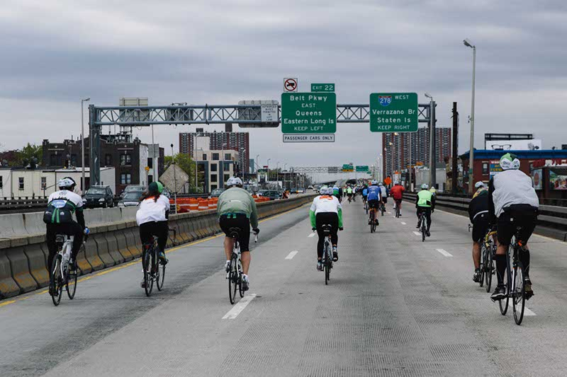
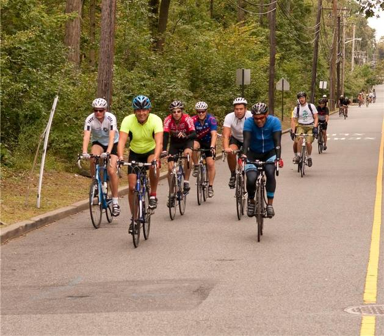
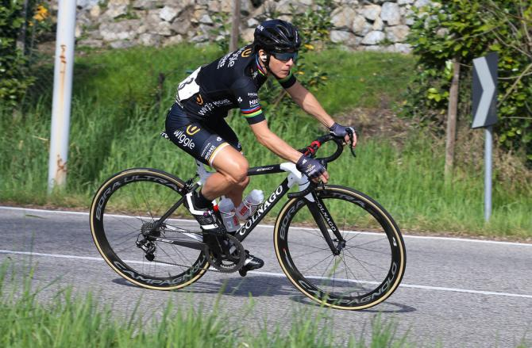

5 Borough Bicycle Tour
- Length: 40 miles
- Register Here: bike.nyc
On the first Sunday in May, 32,000 cyclists of all skill levels come from around the world to roll through every borough of New York City on streets totally free of cars. For one day, the roads are yours, the bridges are yours, the City is yours - there's no better way to experience the Big Apple. Produced in conjunction with the City of New York, the TD Five Boro Bike Tour Presented by REI is the largest charitable bike ride in the U.S., with proceeds funding our free bike education programs. Last year alone, we taught more than 17,000 kids and adults. When you ride with Bike New York, you're helping us in our mission to empower more New Yorkers with the skills to ride safely and confidently on city streets.
Escape New York - 2017
- Length: 25-100 miles (choose your starting point!)
- Register Here: nycc.org
On Saturday, September 16th, 2017, enjoy the support and hospitality of the New York Cycle Club (NYCC) as we go all out to deliver a food-filled, fun-filled and fabulous day of riding to our friends in the cycling community. Choose from one of four clearly-marked routes (25 miles, 50 miles, 65 miles, and 100 miles) that will take you over the George Washington Bridge and into the West Hudson Highlands of Bergen and Rockland Counties. All rides start and finish at Sakura Park in Manhattan, conveniently located at 122nd Street and Riverside Drive (across the street from Grant's Tomb) and easily accessible from the 125th Street stop on the 1 train.
Latest News
Bronzini: I'm going to retire when I feel like it
- Date: May 13, 2017
- Read More: cyclingnews.com
On Friday, Bronzini finished the race over 8 minutes behind the leaders. When asked about her ambitions the two-time road race world champion admitted she was more focused on the flat sprint stages, and letting her teammates take opportunistic chances.
"Ah well, survive in the first two stages, and we'll see in stage 3 and 4 if we can get some result," Bronzini said. "We are not a big team here, so we do not have a lot of expectations against full teams on board. We are going to figure it out ourselves if the girls riding with me have the possibility to show themselves in the race. It is important to give to the mates a way to try and have the best chance for themselves."